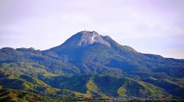
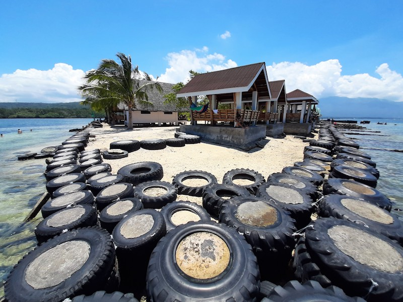
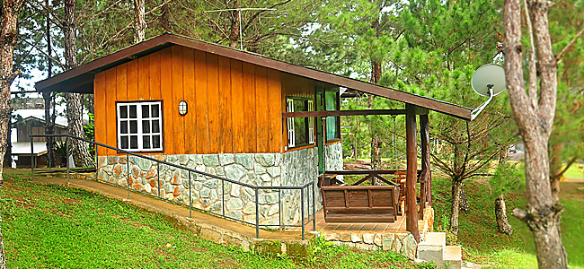

Carved out of the historic undivided Davao province in 1967, Davao del Sur boasts a rich historical tapestry and a thriving agricultural economy. Geographically bordered by Davao City to the north and the Celebes Sea to the south, the province is often referred to as a "coconut country" and is famous for producing some of the country's best bananas, mangoes, and coffee.
Beyond its agricultural bounty, Davao del Sur is a beautiful melting pot of cultures. It is home to migrant settlers from the Visayas and Luzon, who live in harmony with the indigenous Bagobo-Tagabawa, B'laan, and Tagacaolo communities. This blend of modern progress and preserved ancestral traditions makes the province a uniquely captivating destination.
Home to Mt. Apo, the highest peak in the Philippines.
Crystal-clear waters and white sand beaches await.
Rich traditions of the Bagobo and B'laan peoples.
Nestled in the southeastern corner of Mindanao, Davao del Sur is a captivating blend of rugged landscapes and warm local hospitality. From the chilly, pine-clad hills of Kapatagan to the bustling coastal towns, it is a province where every journey leads to a new and exciting discovery. Beyond its famous peaks and beaches, the province is an agricultural powerhouse, producing export-quality bananas, mangoes, and cacao. It’s a place where you can immerse yourself in the vibrant festivals of Digos City, learn the ancient weaving techniques of the indigenous tribes, and escape the crowds to find your own slice of paradise.

Scale the majestic trails of Mt. Apo, the country's tallest volcano, and witness biodiversity like nowhere else.
Explore
Escape to a tranquil, mangrove-fringed sandbar offering the perfect quiet retreat away from the city.
Explore
Soar above the pine canopy on giant ziplines and enjoy the crisp, misty mountain breeze in Kapatagan.
ExploreFly to Francisco Bangoy International Airport in Davao City, then take a bus south.
November to May is the dry season — ideal for outdoor activities and beach trips.
Davao del Sur offers affordable accommodations, food, and transport options.